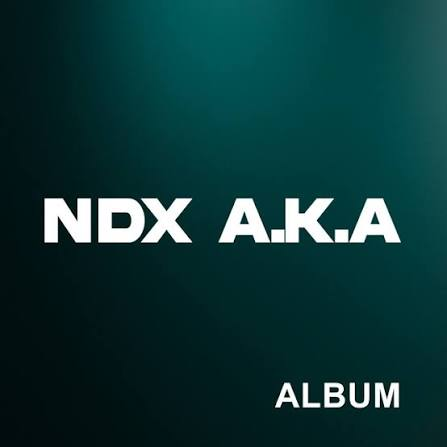

Daftar Lagu

| Judul lagu | Penyanyi | Pencipta | Durasi |
|---|---|---|---|
| Kalah | Aftershine berkolaborasi dengan Restianade | Andika Permana Putra | 1:06 |
| Los Dol | Denny Caknan | Denny Caknan & Lek Dahlan | 4:48 |
| Nemen | NDX AKA | Gilga Sahid (GildCoustic) | 4:48 |
Tambah Lagu
Tentang Saya
Saya adalah seorang pecinta musik yang suka mendengarkan berbagai genre lagu. Saya memiliki playlist musik favorit yang terus diperbarui setiap hari.